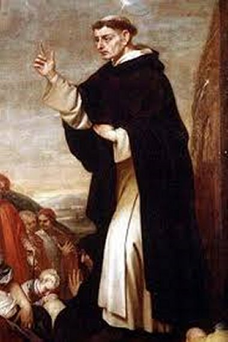

SÃO VICENTE FERRER

"SACERDOTE DA ORDEM DOMINICANA, TAMBÉM CHAMADA DE ORDEM DOS PADRES PREGADORES, FOI FUNDADA POR SÃO DOMINGOS DE GUSMÃO. COM CERTEZA DEUS NOSSO SENHOR O UNGIU COM O ÓLEO DA PREDILEÇÃO, POIS SUA OBRA É ADMIRÁVEL E OS MILAGRES DIVINOS REALIZADOS POR SUA EFICAZ INTERCESSÃO, LHE OUTORGARAM UMA SANTIDADE BONITA, MODESTA E SIMPLES".
=ÍNDICE=
 CONVITE +
FOTOGRAFIAS + E-MAIL
CONVITE +
FOTOGRAFIAS + E-MAIL